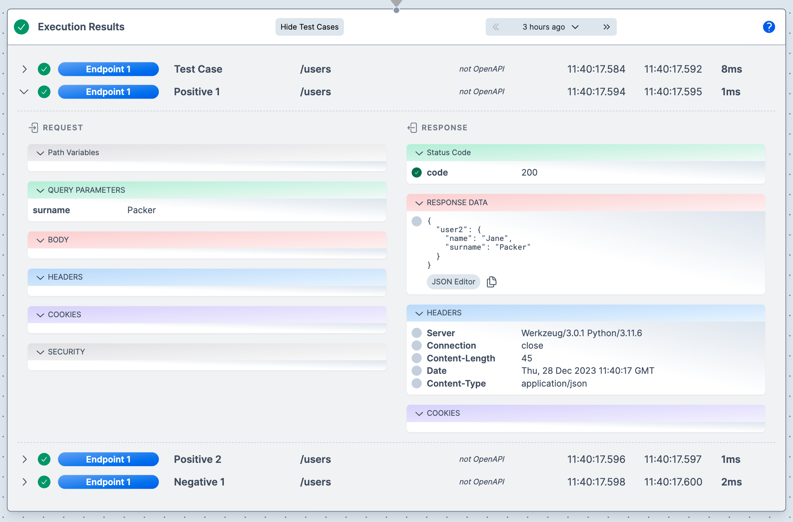

Overview
The above video explains the main concepts.
The Test Case Table
When you run tests from the test case table, or press the green Quick Play icon in the Endpoint header, the results are displayed in the Execution Results component.

Row details
Each top level row contains the summary information for each test. There are as may rows as there are test cases multiplied by the number of Endpoints under test.
Hiding and showing the test case table
If you ran a test using the Quick Play icon in the Endpoint component header and have never look at test cases, the test case table will be hidden.
Pressing the Show Test Cases' button will show the table. You can hide the test case table when visible by pressing the Hide Test Cases button.
Execution history
The header area shows execution history. You can select from the history to see previous executions for the loaded test configuration.
Drill down
If there is only one test result then the results are auto-expanded. Otherwise, the table is collapsed and you can drill down by clicking anywhere in a row.
Response icon and colors
When looking at the results, if there is a grey circle next to a response item, it indicates that this was not tested and therefore has no impact on whether the test case passed or failed.
If green, then the item was tested and has the expected result.
If red, then the was was tested and did not contain the expected result. You can hover over the icon to see what result was expected.
Navigate to Endpoint
You can navigate to an endpoint from the table by clicking in the blue pill that displays the endpoint name.
Executing multiple test configurations
You can also execute all test configurations in a Test Manager group and see a consolidated report. Click here for more details.